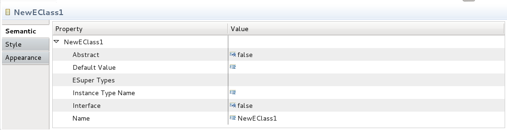

You can override the default CellEditors in the Sirius semantic properties views by implementing
org.eclipse.sirius.ext.emf.ui.ICellEditorProvider and provide it through the
org.eclipse.sirius.ui.siriuspropertiescelleditor extension point.

The semantic properties view
This extension mechanism can also be used for other editors properties view. That can be done by providing the
org.eclipse.sirius.ui.tools.api.properties.SiriusExtensiblePropertySource instead of the default EMF one by replacing the
propertySourceProvider in the generated editor.